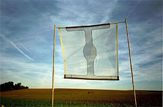

| |
|
| Jeanne Laurent « Sic transit gloria mundi « installation |
 |
Rapport d’activités 2012
Château de Monthelon |
2012 en chiffres
43 projets accueillis en résidence
10 disciplines artistiques
144 artistes de 11 pays
66 artistes participant aux "Rencontres de Monthelon" (16 au 30 juillet 2012)
15 activités publiques (sortie de résidences, représentations, installations et expositions, etc.)
3000 personnes venues assister à une ou plusieurs représentations au Château de Monthelon |
|
|
Monthelon est un OUI inconditionnel, un manifeste
La recherche et la création sont au centre du projet du Château de Monthelon depuis sa création. Monthelon met à disposition des artistes des conditions favorables au travail de recherche. Les artistes s’engagent à dédier leur passage au Château à la création et à la recherche. Un pacte tacite et solide existe entre les chercheurs/créateurs et le lieu d’accueil.
Le luxe pour la création, c’est le vide. Le vide c’est l'absence des références, de prétextes ou de justifications.
Echanger avec ceux qui se trouvent dans une démarche semblable est une source d’inspiration.
Monthelon propose :
- un ciel immense et de la nature, de l'air, de la lumière et du silence.
- une présence immédiate et du temps.
- l'absence de pression économique et d’obligation d'estimer sa valeur.
- un état d'esprit ouvert à une recherche sans compétition, rentabilité ou notion d'efficacité.
- des rencontres avec d'autres artistes, chercheurs et avec soi-même. Devenir et être part.
L'angoisse fait partie de la recherche. A Monthelon, au fil du travail, elle devient transparente, elle est toujours là, présente, mais n’est pas obscure.
Monthelon est un lieu où les mensonges rougissent. Monthelon permet de se centrer sur le travail, de laisser de côté le monde et ses attentes et de porter son attention sur le présent, l’immédiat.
Monthelon c’est aussi :
- plusieurs salles de travail
- des studios
- des ateliers de peinture, de musique
- un atelier de menuiserie
- un atelier de métal
- des logements individuels ou à plusieurs en chambre ou caravane
- une cuisine et souvent des repas en commun (le quotidien se ré-invente tous les jours)
- des espaces chapiteau et la possibilité d'installer des caravanes
- des salons et une bibliothèque
- des balades et des coins perdus
Monthelon vous invite :
- à participer, à rencontrer, à partager
- à observer, à se mettre à l'écoute
- à se rappeler et à se dé-couvrir
- à se confier à la recherche, sans autre obligation
Monthelon vous offre du temps, le temps de construire et développer vos projets, le temps d'en imaginer de nouveaux. Seul mais ensemble. |
|
|
| La vie au château |
Actuellement, le fonctionnement du château est assuré majoritairement par les bénévoles qui habitent dans et autour du château.
Une personne est employée en contrat aidé (26 heures par semaine) pour l’accueil des artistes.
L'entretien et les réparations importantes sont assurés par des prestataires vivant dans le voisinage.
Le château est habité par 5 adultes et 3 enfants. Depuis sa création en 1991, le projet du Château de Monthelon a attiré de nombreuses personnes aux alentours. 57 personnes se sont installées, dont 24 enfants qui sont nés et scolarisés à Guillon, Montréal et Avallon. 17 maisons ont été achetées et rénovées.
Tous, habitants du château, artistes en résidence et personnes qui se sont installées aux alentours, ont un impact réel et non négligeable sur l’économie locale. |
|
|
Nom |
Genre |
Date de séjours |
Jours |
|
Nationalité" |
Nb.P |
|
|
|
|
|
|
|
Les Arrosées |
Théâtre pour Enfants |
02 au 09/01 |
8 |
|
F |
3 |
Pierre Constantin |
Dessin/Performance |
19 au 25/01 |
7 |
|
F |
1 |
Cornelia Huber |
Musique |
26. 01 au 12/02 |
17 |
|
CH |
2 |
Michael Finger |
Ecriture/scénario |
23 au 26/01 |
3 |
|
CH |
1 |
Cille et Jean-Benoît |
écriture/conception |
31.01 au 03/02 |
4 |
|
F/ DK |
2 |
Sav Yeini |
Danse |
13 au 25/02 |
13 |
|
Isr. Et div. |
6 |
German Caro Larson |
Cirque |
26/02 au 11/04 |
47 |
|
Chil |
1 |
Adèll Nodé-Langlois |
Clown |
05 au 17/ |
13 |
|
F |
3 |
La Tournoyante |
Théâtre Acrobatie |
18/03 au 03/04 |
13 |
|
F |
3 |
Michael Finger |
écriture/scénario |
20 au 23/ 03 |
4 |
|
CH |
1 |
Les Arrosées |
Théâtre pour Enfants |
26/ 03 au 01/04 |
7 |
|
F |
3 |
Barbara |
écriture |
09 au 16/04 |
8 |
|
B |
1 |
Adèll et Fifo |
Musique |
16 au 20/04 |
5 |
|
F |
4 |
K. von Abel |
Musique |
22 au 30/04 |
9 |
|
D,F, Col. A. |
13 |
Monica Performance |
Performance |
13 au19/05. |
7 |
|
D.B.F. CH A |
12 |
Magdalena Bajamonde |
Danse |
30/04 au 06/05 |
7 |
|
Chil. |
2 |
Loutop |
Danse |
03 au 17/05 |
14 |
|
USA, CH F |
4 |
Loutop |
constr. Décor |
17/05 au 15/07 |
56 |
|
ch. |
1 |
Anomalie |
écriture/scénario |
05 au 10/05 |
6 |
|
F |
2 |
MichaelFinger |
écriture/scenario |
12 au 27/05 |
16 |
|
ch. |
1 |
Miriam et Manu |
Acrobate |
14 au 18/05 |
5 |
|
F |
2 |
Had Feets Hands |
Acrob. Danse |
21 au 31/05 |
11 |
|
D |
5 |
Delphine Lanson |
écrit |
03 au 07 au 06 |
5 |
|
F |
1 |
Natalia Huidobro |
Danse |
04 au 26/06 |
22 |
|
Chil. GB |
4 |
Miriam et Manu |
Acrob. |
04 au 08/06 |
5 |
|
USA/F |
2 |
Océane |
Acrob. |
22/06 au 08/07 |
17 |
|
F |
1 |
Magdalena Bajamonte |
Danse |
26/06 au 01/07 |
6 |
|
Chil |
1 |
Aubin |
Musique Compos. |
01 au 10/07. |
10 |
|
F |
1 |
Circo de a'Onde |
Cirque |
29/07 au 12/08 |
14 |
|
chil. |
4 |
Paula Ortiz |
Photographie |
29 au 14/07 |
15 |
|
chil. |
1 |
Monica Performance |
Performance |
13 au 21/08 |
9 |
|
D.B.F. CH A |
12 |
The guys in the kitchen |
Théâtre/Rock |
20 au 30/08 |
10 |
|
B |
6 |
Ilmari et Alessandra |
recherche Théâtre |
20/08 au 06/09 |
16 |
|
Fin/It. |
2 |
Jeanne Laurent |
arts plastiques |
9 au 21/09 |
12 |
|
Fr |
1 |
Anomalie |
écriture |
10 au 14/09 |
4 |
|
DK/F |
2 |
Anomalie |
Recherche |
17 au 23/09 |
6 |
|
F |
2 |
L'Orquesta Tipica Guardia Cadenera |
17 au 25/09. |
8 |
|
F/D/B |
12 |
la Tournoyante |
Cirque Danse |
28/09 au 07/10 |
10 |
|
F |
4 |
Les Arrosées |
Théâtre pour enf. |
23/09 au 07/10 |
14 |
|
F |
3 |
Jeanne Laurent |
arts plastiques |
11/10 au 6/11 |
21 |
|
Fr |
1 |
Anomalie |
Création |
08 au 27/10 |
21 |
|
F/DK/B |
7 |
Cornelia Huber |
Musique Compos. |
01 au 15/11 |
14 |
|
CH |
3 |
La Tournoyante |
Cirque Danse |
19 au 30/11 |
12 |
|
F |
3 |
Total Artistes en résidence |
|
|
|
|
|
146 |
|
|
Disciplines représentées et activités
| Cirque contemporain, Clown |
8 |
| Théâtre (avec 2 spectacles pour enfants) |
7 |
| Ecriture (théâtre et cinéma) |
8 |
| Danse |
6 |
| Musique |
6 |
| Arts plastiques (inclus la Performance) |
6 |
| Photographie |
1 |
| Architecture |
1 |
| Construction décors |
2 |
| |
|
Total projets 2012 |
45 |
Au total, 45 projets ont été accueillis au Château de Monthelon avec 146 artistes participant. En outre, 66 artistes ont participé aux Rencontres de Monthelon 2012 |
|
| |
|
Sortie de résidences
| Artistes et Cies |
Spectateurs |
|
Lieu de présentation |
| Pierre Constantin |
10 |
|
Atelier |
| German Circo |
6 |
|
Salle de répétition |
| Adèll la fascination du désastre |
20 |
|
Salle de répétition |
| Les Arrosées |
8 |
|
Boîte noire |
| Performance |
10 |
|
Plein air |
| Had feet hands |
10 |
|
Salle de répétition |
| Natalia Huidobro |
25 |
|
Salle de danse |
| Aubin |
15 |
|
Salon |
| Alexandre Demay |
80 |
|
Grange communale de Montréal |
| Circo de A'Onda |
250 |
|
Chapiteau |
| Performance |
15 |
|
Plein air |
| The guys in the Kitchen |
20 |
|
Salle de répétition |
| L’Orquesta Típica Guardia Cadenera |
70 |
|
Salle de répétition |
| Anomalie |
50 |
|
Salle de répétition |
| |
|
|
|
| Total |
587 |
|
|
|
| Exposition [Claude Manesse] |
„... l’angoisse de la fin des temps n’a pas tout à fait disparu, elle n’a sans doute jamais quitté le cœur de l’homme ni la conscience qu’il a de sa faiblesse …
Alors, au poète, au peintre, de les dire, de les révéler, de nous saisir et d’effroi et de vertige, au poète, au peintre, de nous ouvrir un espace où le mystère sera encore source « d’infinitude » !“
[Micheline Durand, juin 2012]
En deux mois, plus de 1 200 personnes ont visité l’exposition.
Production : Juliette Lafille
R.P. : Vincent Manesse
Conception et Realisation : Daniel Ott | Ingo Groher |  |
| Activités de formation |
|
Deux ateliers de pratique artistique ont été réalisés par des artistes liés au Château de Monthelon et à destination de publics divers.
Hyacinthe Reisch a mené un atelier auprès des élèves de deux classes du Lycée agricole de Beaune.
En collaboration avec la Mairie de Saint André en Terre Plaine, Sky de Sela a réalisé un stage de clown d'une semaine, dans la salle communale, auprès de professionnels.
|
|
| |
|
Les 7èmes Rencontres de Monthelon
du 26 au 28 juillet 2012
|
Définition des Rencontres 2012
L’édition 2012 marquait un tournant majeur dans l’histoire des Rencontres de Monthelon, qui existent depuis maintenant sept ans.
Il s’agissait en effet pour cette année de proposer une création collective exclusive réalisée en amont au château par un groupe d’une cinquantaine d’artistes. Ces derniers, issus d’horizons artistiques et géographiques différents, se sont rassemblés autour d’un thème commun articulé autour de l’idée de la fin d’une ère et du renouveau. Ce thème a été traité sous la forme d'un rituel artistique mystérieux se déroulant sur trois jours : les 26, 27 et 28 juillet 2012.
Il s’agissait d’une création originale transfrontalière et métissée, hors du commun.
Pendant trois jours, les artistes de Monthelon ont invité le public à venir célébrer le
rituel « Caméléopardisalis », suite au décès de leur ami le clown, emporté par un
chagrin d’amour.
Pour réunir les morceaux de son cœur brisé, les artistes ont célébré lors du premier soir la part féminine du cœur, puis la part masculine le deuxième soir, pour finalement les unir lors du troisième soir.
Durant ces trois jours, le public a été accueilli au sein de la cour du château, dans le jardin, ainsi que dans un chapiteau monté dans le champ, dans un esprit de convivialité et d’ouverture.
| |
La préparation du rituel Caméléopardisalis
Le spectacle « Caméléopardisalis » a été monté en amont du festival, pendant deux semaines de travail et de réflexion partagées par les cinquante artistes. Dirigés par le metteur en scène zurichois, Michael Finger, ils ont travaillé ensemble à créer un rituel à leur image et à l’image de Monthelon.
« Caméléopardisalis », le rituel, fut également une boite à surprise, contenant plusieurs spectacles dans le spectacle. Michael Finger, Babett Althaus, Milena Gross et Katja Brunner ont travaillé sur une création nommée Mothersmilk, destinée à tourner ensuite en Suisse. Mothersmilk a donc été une part du rituel, inscrite dans la narration. Il en est de même pour la Compagnie Sisyphe heureux, qui a présenté sa dernière création, 2BE or NOT, également intégrée dans la narration du rituel.
Parallèlement, l’artiste chilienne Magdalena Bahamondes a fait découvrir au public le travail qu’elle avait réalisé en résidence à Monthelon cette année. Il s’agit d’une recherche acrobatique dansée suspendue dans un arbre.
En quelques chiffres :
Le château a accueilli en moyenne 300 à 400 personnes par soir, soit un total de plus de 1 000 personnes pour trois jours.
Les Rencontres ont impliqué près de 72 personnes, dont 17 comédiens, 10 circassiens, 2 chanteuses, 8 musiciens, 1 metteur en scène, 1 peintre, 6 réalisateurs et monteurs cinéma, 1 costumière, 8 techniciens et constructeurs de décors, 1 administratrice, 3 babysitter pour les enfants.
Ce petit monde a bu 650 litres d’eau, 248 litres de jus de pomme, mangé 1 430 repas (qui ne se sont pas cuisinés tout seuls, merci les cuisinières !) et transpiré des litres de sueur qu’on ne peut pas compter. On a également dénombré 176 éclaboussures venues de la piscine, 3 coupures de courant, et 1 « Magnetic » écrasé par Dani sur son tracteur.
Témoignage d’Anna Von Grüningen, artiste acrobate :
« Ici, j’ai vécu un expérience très forte. J’ai mis du temps à trouver ma place et ce que je voulais donner, compte tenu du nombre de personnes présentes. Le travail a été intense et rapide ce qui ne nous a pas permis de tout travailler. Cependant les rencontres humaines étaient très riches, il y avait beaucoup d’idées et de pistes à travailler. La rencontre était complète, on a vécu ensemble, on était au-delà de l’échange purement artistique. Il y avait une bonne écoute, un respect des uns et des autres, une certaine tranquillité humaine dans toute cette course. Ce qui valait le coup, c’était l’expérience, se jeter à l’eau, accueillir les gens. Il s’est passé beaucoup de choses au niveau humain. Je venais participer aux Rencontres pour la première fois, ce qui était troublant car je ne savais pas à quoi m’attendre. J’ai été un peu catapultée, j’ai senti qu’il fallait que je trouve par moi-même mon rôle, ce qui est intéressant mais aussi épuisant. Cela a eu des influences sur ma manière de jouer. Deux semaines donc très intenses. Peut être qu’un peu plus de temps aurait été nécessaire. Comme il n’y avait pas l’exigence d’un produit fini, il y a eu une réelle aventure humaine, on a pu essayer des choses. On a pris des risques en faisant ces recherches de présenter une création pas forcément achevée au public. C’est le risque. » |
|
|
Conclusion
Les 7èmes Rencontres de Monthelon ont été extrêmement riches dans l'échange, notamment la première semaine, temps de rencontre et d'inspiration mutuelle entre les artistes de divers horizons.
Projet ambitieux par sa taille et sa durée, les Rencontres ont trouvé leur limite la seconde semaine lors de la construction du spectacle. Les participants, très nombreux, aux pratiques artistiques variées et de niveaux différents, n'ont pas toujours su s'accorder autour d'un projet commun.
Malgré ces manques, les soirées ont trouvé leur public qui a passé un agréable moment face à ce joyeux charivari et dans une atmosphère festive. |
|
| La vie de l’association |
Situation financière et administrative
Assemblée générale du 8 avril 2012
Monthelon n’ayant plus de personnel administratif depuis mars 2012 et le départ de Juliette Lafille (service civique), tous projets stratégiques de développement, comme la mise en place de formations, la recherche de fonds et de mécénat, etc. ont été suspendus faute de moyens. Afin d'assurer l'existant et notamment les Rencontres de Monthelon, seule une stagiaire, Adeline Deiler, a été recrutée durant deux mois.
Lors de l'assemblée générale du 8 avril 2012, la Présidente a refusé de signer le bail emphytéotique proposé par les propriétaires de Monthelon. Elle souhaite attendre que l’association soit renforcée d'un point de vue administratif et financier. Elle estime que l'association n'est pas en mesure d'assumer cette responsabilité actuellement, le budget 2012 ne permettant pas d’embaucher une personne expérimentée à l'administration.
Suite à l’AG du 8 avril, en juin 2012, une rencontre d’urgence a été organisée avec les tutelles.
La DRAC, le Conseil Régional et le Conseil Général se sont réunis et ont affirmé leur volonté de soutenir le projet de Monthelon.
La DRAC a réagi rapidement et augmenté son engagement pour le financement d’un administrateur(trice) à hauteur de 10 000 € dès l'année 2012.
Le Conseil Régional envisage, pour sa part, une augmentation de l'aide financière en 2013.
Le Conseil Général étudie actuellement la possibilité de mandater une personne pour assurer l'administration de l'association.
Assemblé Générale extraordinaire du 28 juillet 2012
Le compte rendu de cette A.G. est disponible en ligne sur le site Internet du Château de Monthelon :
http://monthelon.org/association/assemblee_juillet2012.html
Le conseil d’administration et le bureau ont été renouvelés. Leurs membres se sont répartis les responsabilités quant à la gestion courante de l'association pour palier dans l'urgence l'absence d'administrateur.
Suite à cette A.G., le C.A. de l'association s'est réuni régulièrement afin d'organiser au mieux le présent et de trouver des solutions pour assurer l'avenir du Château de Monthelon (recherche d'un administrateur(trice), financement de ce poste, etc.).
Les avancées
En 2012, l'essentiel des actions ont été menées à bien par les membres du Conseil d'administration et par des bénévoles.
Gestion courante de l'association :
- Réflexions sur le fonctionnement de l'association, répartition des responsabilités et des tâches courantes
- Création d’une base de données fiable afin de gérer les cotisations et le contact avec les adhérents
- Tenue à jour de la comptabilité 2012
- Création du budget prévisionnel 2013
- Rédaction du rapport d’activités 2012 et du programme des projets 2013
Communication :
- Liaisons régulières et entretiens avec la presse locale et régionale
- Réalisation d'un dépliant pour présenter le château
- Rédaction des newsletters
- Mises à jour régulières du site Internet
- Réalisation d'une vidéo artistique lors des Rencontres de Monthelon
Entretien et équipement :
- Suivi du projet de chauffage : Une demande d’aide à l’investissement a été déposée auprès du Conseil Régional et de l’ADEME en 2012. Elle a été acceptée à hauteur de 80 000 € sur 150 000 € nécessaires à l’achat d’une chaufferie.
- Mise en place de l'isolation du Château : Une demande à l’aide d’investissement a été déposée auprès de la DRAC. Grâce à cette dernière, 6 nouvelles fenêtres ont été achetées et l'isolation du grenier est en cours.
Développement de l'association :
- Rencontres nombreuses avec les partenaires financiers, les élus et le LAB.
- Réalisation de demandes de subventions 2013 au fonctionnement et à l'investissement, nécessaires à la survie du lieu.
- Recherche de financements complémentaires privés afin d'assurer l'embauche d'un(e) administrateur(trice) et la réalisation du projet de chauffage (un dossier a été déposé en novembre auprès de la Fondation Crédit Agricole / caisse régionale Bourgogne Champagne pour solliciter une aide financière pour le projet d’investissement chauffage).
- Développement de nouvelles idées, projets et perspectives.
|
|
|  |
|
Le mot de la fin
| |
La route de Monthelon est pleine de cailloux. Le projet artistique du château existe depuis 23 ans dans une fragilité qui va certainement perdurer mais Monthelon a un avenir, oui ! Depuis 2009 et la création de l'association du Château de Monthelon, le projet n'a pas cessé de se structurer et de se développer. A l’origine international, le rayonnement du château ne cesse de croître au niveau national et surtout local. Monthelon s'ancre toujours plus sur son territoire tout en conservant une ouverture et un mélange propre aux arts du cirque et à la démarche de création en général. Monthelon est une richesse pour son territoire. Monthelon est riche.
Le château et l'association respirent grâce à ceux qui y croient, participent au projet et le soutiennent, relèvent le défi avec passion et jouent avec les cailloux. Merci à tous pour ce grand soutien ! |
|
 |
Partenaires et remerciements
L'association du Château de Monthelon est soutenue financièrement par la Direction Régionale des Affaires Culturelles de Bourgogne, le Conseil Régional de Bourgogne, le Conseil Général de l’Yonne, la Communauté de communes de la Terre Plaine et la Fondation Avina.
Merci à la ville d’Avallon, la commune de Montréal, le Théâtre d’Auxerre, L’Yonne en Scène et tous les bénévoles, adhérents et artistes en résidence pour leur précieux soutien.
Au debut de la page |
| |
|